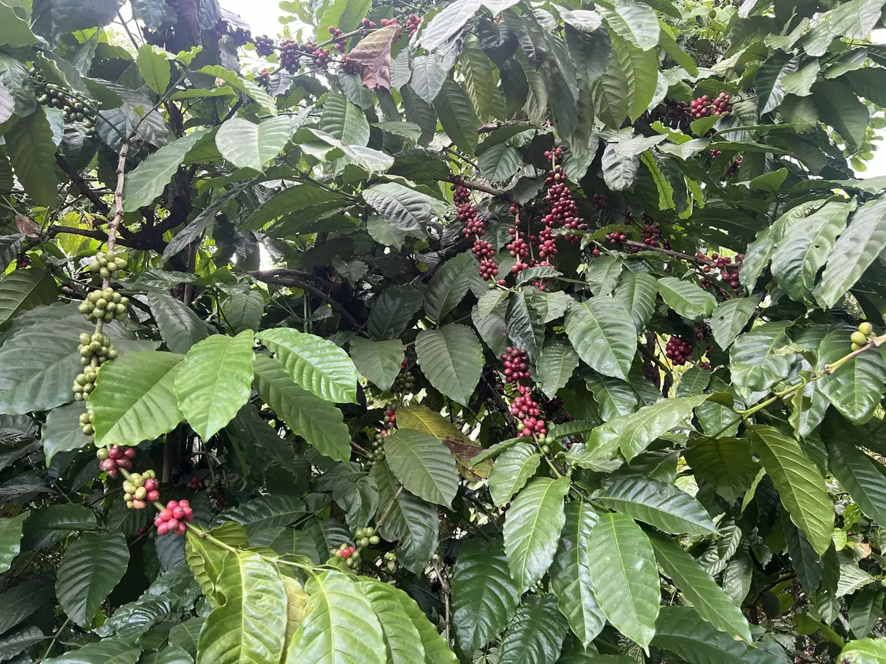
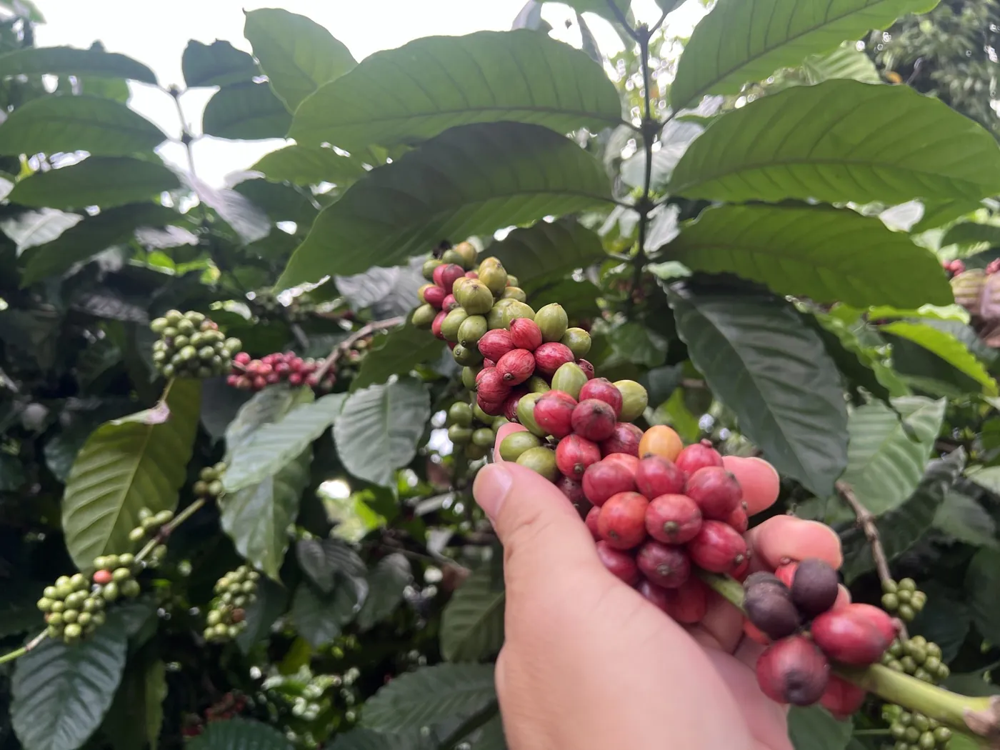

Đắk Nông là một trong những vùng trồng Robusta lớn nhất Việt Nam. Trên nền đất đỏ bazan của cao nguyên, cây cà phê vối cho hạt chắc, vị đậm, đắng sâu và thân dày, đúng chất ly cà phê phin mà người Việt quen uống. Từ ngày 1/7/2025, Đắk Nông hợp nhất cùng Lâm Đồng và Bình Thuận thành tỉnh Lâm Đồng mới, nhưng tên gọi “cà phê Đắk Nông” vẫn quen thuộc với giới thu mua và rang xay.

Vùng trồng Robusta lớn thứ 3 Tây Nguyên
Năm 2024, Đắk Nông có khoảng 143.000 ha cà phê, trong đó hơn 131.000 ha cho thu hoạch, sản lượng khoảng 350.000 tấn nhân. Diện tích và sản lượng này đứng thứ 3 cả nước, sau Đắk Lắk và Lâm Đồng. Cà phê chiếm khoảng 35% diện tích đất nông nghiệp của tỉnh và khoảng 90% sản lượng được xuất khẩu.
Sau hợp nhất, tỉnh Lâm Đồng mới có khoảng 327.000 ha cà phê, lớn nhất cả nước, trong đó Robusta chiếm khoảng 311.000 ha. Tháng 10/2025, cà phê Robusta và Arabica của tỉnh được cấp chỉ dẫn địa lý “Lâm Đồng”, mở thêm cơ hội để hạt Robusta vùng Đắk Nông cũ được định danh rõ nguồn gốc khi ra thị trường.
Đất đỏ bazan và khí hậu hai mùa
Robusta là loài ưa nắng, chịu nóng tốt và thường trồng ở độ cao thấp hơn Arabica, khoảng 200–1.000 m. Cao nguyên Đắk Nông đáp ứng gần như trọn vẹn điều kiện đó:
- Đất đỏ bazan: tầng đất dày, tơi xốp, giàu khoáng, giữ ẩm tốt, giúp cây phát triển bộ rễ khỏe và nuôi quả to, chắc.
- Mùa mưa – mùa khô rõ rệt: mùa khô giúp cây phân hóa mầm hoa đồng loạt, mùa mưa nuôi quả. Đổi lại, những năm nắng nóng kéo dài, nhà vườn phải chủ động nước tưới để giữ năng suất.
- Nắng nhiều, nhiệt độ ấm: quả chín đều, hạt tích lũy nhiều chất khô, tạo nên vị đậm và thân dày đặc trưng của Robusta.
Các tiểu vùng nổi bật
Cà phê trải khắp vùng Đắk Nông cũ, tập trung nhiều ở Đắk Mil, Krông Nô, Tuy Đức, Đắk Song, cùng Cư Jút, Đắk R’lấp, Đắk Glong và Gia Nghĩa.
- Đắk Mil: vùng cà phê lâu năm, đã có nhãn hiệu “Cà phê Đắk Mil”. Hai xã Thuận An và Đức Minh được chọn phát triển cà phê đặc sản với khoảng 670 ha, Thuận An còn có vùng cà phê ứng dụng công nghệ cao khoảng 335 ha.
- Đắk Song, Tuy Đức: đất bazan rộng, nhiều vườn tái canh bằng giống mới, năng suất và chất lượng ổn định.
- Krông Nô, Cư Jút: vùng thấp hơn, nắng nóng, cho hạt Robusta đậm, đắng rõ, hợp pha phin truyền thống.
Mùa thu hoạch và hái chín

Vụ cà phê Đắk Nông kéo dài từ cuối tháng 10 đến tháng 1 năm sau. Trên cùng một cành, quả chín không đều: có quả đỏ mọng, có quả vàng ươm, có quả vẫn còn xanh. Chất lượng ly cà phê bắt đầu từ chính lúc này.
- Hái chín: chỉ hái quả chín đỏ, chia vườn hái nhiều lần. Quả chín cho hạt ngọt, đầy đặn, ít vị chát.
- Hái tuốt cả cành: nhanh và rẻ hơn nhưng lẫn nhiều quả xanh, làm hạt chát, gắt, mùi hăng sau khi rang.
- Phơi, sơ chế đúng cách: phơi trên sàn hoặc giàn, đảo đều, không để quả ẩm mốc. Robusta sơ chế ướt hoặc phơi mật ong cho vị sạch và ngọt hơn.
Hương vị Robusta Đắk Nông
Robusta Đắk Nông mang đặc trưng của Robusta cao nguyên bazan:
- Vị: đắng đậm, ít chua, hậu vị kéo dài.
- Hương: sô-cô-la đen, ca cao, hạt rang, gỗ; lô hái chín, sơ chế kỹ có thêm vị ngọt đường nâu.
- Thân: dày, sánh, tạo lớp crema đẹp khi pha espresso.
- Caffeine: cao hơn Arabica, cho cảm giác tỉnh táo rõ rệt.
Nhờ vị đậm và thân dày, Robusta Đắk Nông hợp pha phin, cà phê sữa đá, bạc xỉu và làm nền cho các blend espresso, giúp ly latte, cappuccino giữ được vị cà phê khi thêm sữa.
Hướng đến Robusta chất lượng cao
Từ năm 2021, nông dân Đắk Nông đã tái canh gần 28.000 ha cà phê già cỗi bằng giống mới. Đến năm 2024, khoảng 29.000 ha đạt các chứng nhận chất lượng như 4C, Rainforest Alliance, hữu cơ, và tỉnh đã có 25 chuỗi liên kết sản xuất – tiêu thụ. Hái chín, sơ chế sạch và truy xuất được vùng trồng đang giúp Robusta vùng này dần bước vào phân khúc cà phê chất lượng cao, đặc sản.
Thưởng thức Robusta rang mới theo đơn
CAFEROA rang mộc 100%, không tẩm ướp, rang theo đơn đặt hàng cho gia đình, quán và văn phòng.
Câu hỏi thường gặp
Cà phê Đắk Nông bây giờ thuộc tỉnh nào?
Từ ngày 1/7/2025, tỉnh Đắk Nông hợp nhất cùng Lâm Đồng và Bình Thuận thành tỉnh Lâm Đồng mới. Các vùng trồng quen thuộc như Đắk Mil, Đắk Song, Tuy Đức, Krông Nô nay thuộc tỉnh Lâm Đồng.
Cà phê Robusta Đắk Nông có vị như thế nào?
Vị đắng đậm, ít chua, thân dày, hương sô-cô-la đen, ca cao, hạt rang. Lô hái chín và sơ chế kỹ có thêm vị ngọt đường nâu, hậu vị kéo dài.
Mùa thu hoạch cà phê ở Đắk Nông vào tháng mấy?
Vụ thu hoạch kéo dài từ cuối tháng 10 đến tháng 1 năm sau. Cà phê rang từ hạt vụ mới thường thơm và tươi hơn.
Robusta Đắk Nông hợp pha theo cách nào?
Hợp nhất là pha phin, cà phê sữa đá, bạc xỉu. Khi phối cùng Arabica, Robusta làm nền cho espresso, latte, cappuccino nhờ thân dày và crema đẹp.
Nguồn số liệu: Báo Lâm Đồng (Sở Nông nghiệp tỉnh Đắk Nông cũ), VOV, Nhân Dân, Cổng thông tin tỉnh Đắk Nông. Ảnh: vườn cà phê Robusta Đắk Nông. Bài viết bởi CAFEROA.